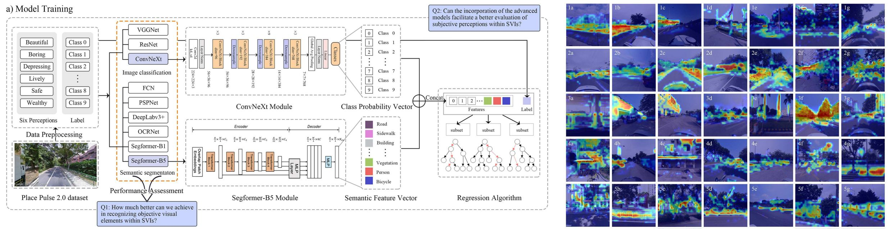

研究演示：展示预先计算的模型结果。Research demo: displays precomputed model results.
街景图像感知分析
使用在Place Pulse 2.0数据集上训练的"SegFormer-B5+ConvNeXt-B+RF"模型，对街景图像的美观性、活力与安全等维度进行主观感知评估，旨在为城市规划与更新提供精准的决策支持
Street View Image Perception Analysis
This study utilizes the "SegFormer-B5+ConvNeXt-B+RF" model, trained on the Place Pulse 2.0 dataset, to assess subjective perceptions of street view images—including beauty, liveliness, depress, wealth, boredom and safety—to inform targeted decisions in urban planning and renewal

An integrated deep learning approach for assessing the visual qualities of built environments utilizing street view images
This study presents a novel deep learning model, "SegFormer-B5+ConvNeXt-B+RF," for large-scale visual landscape assessment using street view images. Achieving 78.47% accuracy in predicting six subjective perceptions (e.g., beautiful, safe), the model was applied to Guangzhou's Tianhe District to create perception maps. By integrating SHapley Additive exPlanations (SHAP) and Class Activation Map (CAM) visualizations, the research offers interpretable insights into how objective visual elements influence public perception, providing a valuable tool for targeted urban renewal and sustainable city planning.
开始试用
从示例街景中选择一张，浏览预先计算的语义分割与感知评分。
Start Trial
Select an example street view to explore precomputed segmentation and perception scores.